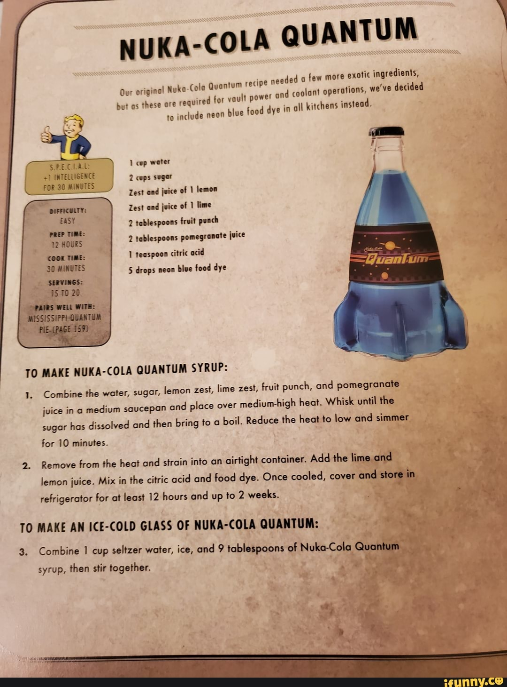

Nuka Cola Recipe

The wasteland's favorite beverage - it's like regular cola, but with a delightful hint of radiation and a side of relentless bottle cap collection quests. Just remember, a warm Nuka-Cola may be tastier, but it won't heal your rads!
Ingredients:
- 1 can of blue raspberry soda
- 1 can of lemon-lime soda
- A few drops of blue food coloring (for that unmistakable radioactive glow)
- 1 tablespoon of grenadine syrup (for that extra kick)
- Dry ice (to mimic the carbonation effect)
Recipe instructions:
- Take your can of blue raspberry soda, and carefully add a few drops of blue food coloring
until it glows like it's fresh from the wasteland. Be sure not to go overboard, or you might end up with a radioactive surprise!
- Fill a glass halfway with your neon blue soda mixture, and then gently pour in your lemon-lime
soda to create that signature Nuka-Cola effervescence. Watch out for bubbles, they're even better than bottle caps!
- Drizzle the grenadine syrup on top, just like the blood of your enemies, but tastier! Give it
a little stir to get that perfect, radioactive hue.
- Add a small chunk of dry ice for that 'cooling effect' - literally. And remember, don't drink it
until the dry ice has fully evaporated unless you want to experience your very own mini nuclear explosion (which, let's be honest, might be fun).
- Garnish your mocktail with a cocktail umbrella and a maraschino cherry because even in the post-apocalypse,
can still enjoy the finer things in life.
- Serve with a side of Pip-Boy and a dash of quirky Vault-Tec humor. Enjoy your Nuka-Cola Quantum Mocktail,
and don't forget to check for hidden caps at the bottom of the glass!
Return to top
Return to main page